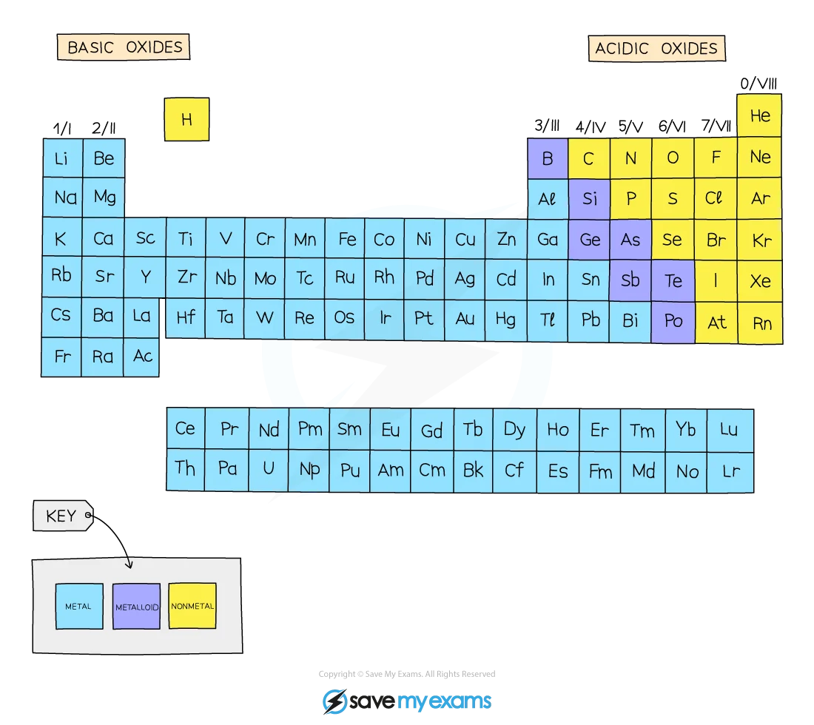

C8.1 Arrangement of elements
The Periodic Table arranges elements in order of increasing proton number.
Vertical columns = groups
Horizontal rows = periods
Across a period: metals → non-metals.
Group number = number of outer electrons (Group I–VII).
Period number = number of electron shells.
Elements in the same group have similar properties because they have the same number of outer-shell electrons.
Trends can be used to predict properties (melting point, reactivity, etc.).
C8.2 Group I (alkali metals)
Soft metals (Li, Na, K).
Down the group:
– Melting point decreases
– Density increases
– Reactivity increases
React with water:
metal + water → hydroxide + hydrogen
Example: 2Na + 2H₂O → 2NaOH + H₂
Reactivity increases because outer electron is further from nucleus and more shielded.
Lower elements (Rb, Cs) react even more violently.
C8.3 Group VII (halogens)
Diatomic non-metals (Cl₂, Br₂, I₂).
Down the group:
– Density increases
– Reactivity decreases
– Melting/boiling point increases
States at room temp:
Cl₂ → gas
Br₂ → liquid
I₂ → solid
Displacement reactions:
More reactive halogen displaces less reactive one.
Example: Cl₂ + 2KBr → 2KCl + Br₂
Reactivity decreases due to increased shielding.
C8.4 Transition elements
Metals between Groups II and III.
Properties:
– High density
– High melting points
– Form coloured compounds
– Act as catalysts
C8.5 Noble gases (Group 0)
Unreactive, monatomic gases.
Full outer electron shells → very stable.
Down the group:
– Density increases
– Melting/boiling point increases
– Solubility increases
Uses:
– Helium: balloons
– Neon: signs
– Argon: light bulbs/welding
Periodic Table Reference
